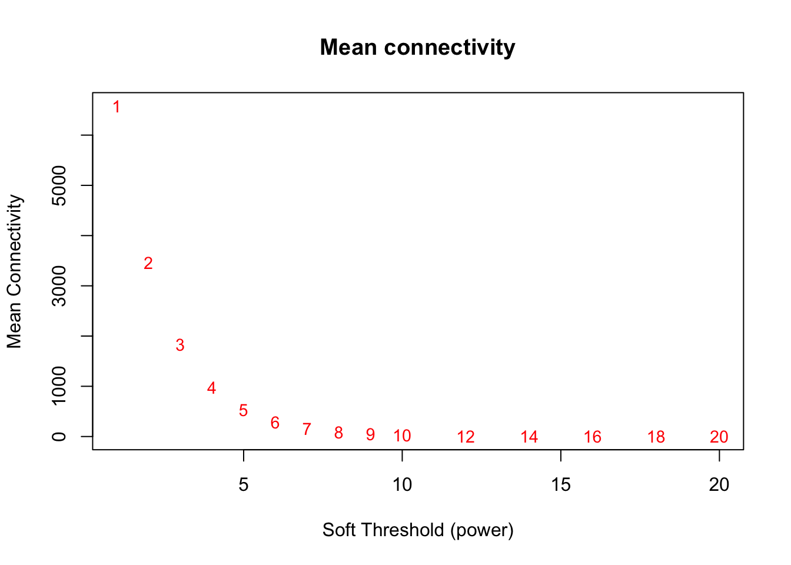

P7 WGCNA Analysis
Paul Hook
Last update: 2017-12-13
Code version: 8750be2cf8755401b006d9cff78aa5aafaf1b1cc
Setting important directories. Also loading important libraries and custom functions for analysis.
seq_dir <- "/Volumes/PAULHOOK/sc-da-parkinsons/data"
file_dir <- "/Volumes/PAULHOOK/sc-da-parkinsons/output"
Rdata_dir <- "/Volumes/PAULHOOK/sc-da-parkinsons/data"
Script_dir <- "/Volumes/PAULHOOK/sc-da-parkinsons/code"
source(file.path(Script_dir,'init.R'))
source(file.path(Script_dir,"tools_R.r"))Loading R libraries necessary for WGCNA analysis
library(AnnotationDbi)## Warning: package 'AnnotationDbi' was built under R version 3.3.1## Loading required package: IRanges## Loading required package: S4Vectors## Warning: package 'S4Vectors' was built under R version 3.3.1##
## Attaching package: 'S4Vectors'## The following object is masked from 'package:gplots':
##
## space## The following object is masked from 'package:tidyr':
##
## expand## The following objects are masked from 'package:dplyr':
##
## first, rename## The following object is masked from 'package:plyr':
##
## rename## The following objects are masked from 'package:Matrix':
##
## colMeans, colSums, expand, rowMeans, rowSums## The following objects are masked from 'package:base':
##
## colMeans, colSums, expand.grid, rowMeans, rowSums##
## Attaching package: 'IRanges'## The following objects are masked from 'package:dplyr':
##
## collapse, desc, slice## The following object is masked from 'package:plyr':
##
## desc##
## Attaching package: 'AnnotationDbi'## The following object is masked from 'package:MASS':
##
## select## The following object is masked from 'package:dplyr':
##
## selectlibrary(impute)
library(GO.db)## library(preprocessCore)
library(knitr)## Warning: package 'knitr' was built under R version 3.3.2library(rgl)## Warning: package 'rgl' was built under R version 3.3.2library(WGCNA)## Warning: package 'WGCNA' was built under R version 3.3.2## Loading required package: dynamicTreeCut## Loading required package: fastcluster## Warning: package 'fastcluster' was built under R version 3.3.2##
## Attaching package: 'fastcluster'## The following object is masked from 'package:stats':
##
## hclust## ==========================================================================
## *
## * Package WGCNA 1.61 loaded.
## *
## * Important note: It appears that your system supports multi-threading,
## * but it is not enabled within WGCNA in R.
## * To allow multi-threading within WGCNA with all available cores, use
## *
## * allowWGCNAThreads()
## *
## * within R. Use disableWGCNAThreads() to disable threading if necessary.
## * Alternatively, set the following environment variable on your system:
## *
## * ALLOW_WGCNA_THREADS=<number_of_processors>
## *
## * for example
## *
## * ALLOW_WGCNA_THREADS=4
## *
## * To set the environment variable in linux bash shell, type
## *
## * export ALLOW_WGCNA_THREADS=4
## *
## * before running R. Other operating systems or shells will
## * have a similar command to achieve the same aim.
## *
## ==========================================================================##
## Attaching package: 'WGCNA'## The following object is masked from 'package:IRanges':
##
## cor## The following object is masked from 'package:S4Vectors':
##
## cor## The following object is masked from 'package:stats':
##
## corlibrary(SC3)
library(clusterProfiler)## Warning: package 'clusterProfiler' was built under R version 3.3.1## Loading required package: DOSE## Warning: package 'DOSE' was built under R version 3.3.1##
## Attaching package: 'DOSE'## The following object is masked from 'package:lattice':
##
## dotplotlibrary(org.Mm.eg.db)## library(ReactomePA)
library(cummeRbund)## Loading required package: RSQLite## Warning: package 'RSQLite' was built under R version 3.3.2## Loading required package: rtracklayer## Warning: package 'rtracklayer' was built under R version 3.3.1## Loading required package: GenomicRanges## Warning: package 'GenomicRanges' was built under R version 3.3.1## Loading required package: GenomeInfoDb## Warning: package 'GenomeInfoDb' was built under R version 3.3.1## Loading required package: Gviz## Warning: package 'Gviz' was built under R version 3.3.1##
## Attaching package: 'cummeRbund'## The following objects are masked _by_ '.GlobalEnv':
##
## JSdist, JSdistFromP, JSdistVec, makeprobs, makeprobsvec,
## shannon.entropy## The following object is masked from 'package:GenomicRanges':
##
## promoters## The following object is masked from 'package:IRanges':
##
## promoters## The following object is masked from 'package:dplyr':
##
## count## The following object is masked from 'package:plyr':
##
## count## The following object is masked from 'package:Biobase':
##
## samples## The following object is masked from 'package:BiocGenerics':
##
## conditionslibrary(foreach)
library(doParallel)## Warning: package 'doParallel' was built under R version 3.3.2## Loading required package: iteratorslibrary(splines)
library(flashClust)##
## Attaching package: 'flashClust'## The following object is masked from 'package:fastcluster':
##
## hclust## The following object is masked from 'package:stats':
##
## hclustLoading in needed P7 data
P7.dat.filter <- readRDS(file.path(Rdata_dir,"P7.dat.filter.final.Rds"))
dim(P7.dat.filter)## Features Samples
## 13746 224Preparing the data for WGCNA analysis. The genes used in the analysis were filtered to only include genes that were determined to be expressed in at least 20 cells (9% of the total cells in the data set).
# Identifying genes only expressed in at least 20 cells
P7.expressed_genes.WGCNA<-row.names(subset(fData(P7.dat.filter),num_cells_expressed >= 20))
length(P7.expressed_genes.WGCNA)## [1] 12628# Keeping only those genes for analysis. Ended up being 12,628 cells.
P7.dat.WGCNA <-P7.dat.filter[P7.expressed_genes.WGCNA,]
# Converting data to log2 + 1 expression
mydata <- log2(exprs(P7.dat.WGCNA)+1)
# Converting data to a matrix which is needed for WGCNA analysis.
mydata <- as.matrix(mydata)
# Checking the dimensions of the data
dim(mydata)## [1] 12628 224# Transposing the matrix so it is in the orientation needed for WGCNA analysis and saving the matrix under a better variable name.
mydata.trans=t(mydata)
datExpr <- mydata.transNext, heirarchial clutering was used to cluster the data and look for any outliers. There seems to be only one glaring outlier.
# Clustering the data by using heirarchial clustering
sampleTree <- flashClust(dist(datExpr), method = "average")
# Plotting the heirarchial clustering in order to manually identify and removce outliers
par(cex = 0.6, mar = c(0,4,2,0))
plot(sampleTree, main = "Sample clustering to detect outliers",
sub="", xlab="", cex.lab = 1.5, cex.axis = 1.5, cex.main = 2)
cutHeight=120 # choosing a cut height of 120 in order to remove the one high level outlier
abline(h = cutHeight, col = "red")
# Cutting the tree at the cut height and seeing how many outliers are removed with the cut
clust = cutreeStatic(sampleTree, cutHeight = cutHeight, minSize = 10)
table(clust)## clust
## 0 1
## 1 223# Keeping only the samples that are not removed by the cut height used
keepSamples <- (clust==1)
datExpr <- datExpr[keepSamples,]
# Saving the number of genes and the number of samples that will move in to WGCNA
nGenes <- ncol(datExpr)
nSamples <- nrow(datExpr)Making a data frame that can be filled with meta-data about the cells and can be used to annotate the heirarchial clustering
# subsetting out trait data from the initial cds
datTraits <- pData(P7.dat.WGCNA[,keepSamples])
datTraits<-datTraits[,c("region","subset.cluster","num_genes_expressed")]
# Setting the colors to match the regional colors
region_labels <- RColorBrewer::brewer.pal(6, "Set1")[1:3]
# Making sure the regional colors match what has been used througout and making a column with the hex codes.
datTraits <- datTraits %>%
mutate(cell.names = row.names(datTraits)) %>%
mutate(x = ifelse(datTraits$region == "FB", region_labels[1],
ifelse(datTraits$region == "MB", region_labels[2],
ifelse(datTraits$region == "OB", region_labels[3], NA))))## Warning: package 'bindrcpp' was built under R version 3.3.2# Re-performing heirarchial clustering
sampleTree2 <- hclust(dist(datExpr), method = "average")
# Plotting the dendrogram with regional identity colored beneath each cell
plotDendroAndColors(sampleTree2, datTraits$x,
groupLabels = names(datTraits),
main = "Sample dendrogram and regional identity")
# Writing out that dendrogram to a PDF
pdf(file = file.path(file_dir, "sample.dendrogram_region.heatmap.pdf"), height = 8, width = 12)
plotDendroAndColors(sampleTree2, datTraits$x,
groupLabels = names(datTraits),
main = "Sample dendrogram and regional identity")
dev.off()## quartz_off_screen
## 2In order to now perform WGCNA on our data, a “soft threshold” needs to be calculated
# Setting what soft thresholds (powers) should be tested for potential use as a soft threshold
powers <- c(c(1:10), seq(from = 12, to=20, by=2))
# Calculating soft thresholds for a signed network
sft <- pickSoftThreshold(datExpr, powerVector = powers,
verbose = 5,
networkType ="signed",
moreNetworkConcepts = F)## pickSoftThreshold: will use block size 3542.
## pickSoftThreshold: calculating connectivity for given powers...
## ..working on genes 1 through 3542 of 12628## Warning: executing %dopar% sequentially: no parallel backend registered## Warning: Some correlations are NA in block 1 : 3542 .## ..working on genes 3543 through 7084 of 12628## Warning: Some correlations are NA in block 3543 : 7084 .## ..working on genes 7085 through 10626 of 12628## Warning: Some correlations are NA in block 7085 : 10626 .## ..working on genes 10627 through 12628 of 12628## Warning: Some correlations are NA in block 10627 : 12628 .## Warning in as.vector(log10(dk)): NaNs produced
## Warning in as.vector(log10(dk)): NaNs produced
## Warning in as.vector(log10(dk)): NaNs produced
## Warning in as.vector(log10(dk)): NaNs produced
## Warning in as.vector(log10(dk)): NaNs produced
## Warning in as.vector(log10(dk)): NaNs produced
## Warning in as.vector(log10(dk)): NaNs produced
## Warning in as.vector(log10(dk)): NaNs produced## Power SFT.R.sq slope truncated.R.sq mean.k. median.k. max.k.
## 1 1 0.50600 10.80 0.842 6580.000 6.56e+03 7440.0
## 2 2 0.74000 13.30 0.776 3460.000 3.43e+03 4490.0
## 3 3 0.74700 12.90 0.667 1830.000 1.80e+03 2770.0
## 4 4 0.65000 10.70 0.775 981.000 9.49e+02 1750.0
## 5 5 0.39700 6.56 0.965 529.000 5.03e+02 1130.0
## 6 6 0.00729 -0.43 0.744 288.000 2.68e+02 745.0
## 7 7 0.62400 -3.07 0.891 158.000 1.44e+02 502.0
## 8 8 0.92100 -3.91 0.988 87.900 7.74e+01 345.0
## 9 9 0.41500 -1.93 0.797 49.300 4.19e+01 242.0
## 10 10 0.85700 -2.81 0.952 28.000 2.28e+01 173.0
## 11 12 0.96100 -2.91 0.992 9.370 6.87e+00 93.2
## 12 14 0.97800 -2.60 0.994 3.320 2.12e+00 53.5
## 13 16 0.97500 -2.30 0.988 1.250 6.69e-01 32.5
## 14 18 0.97700 -2.04 0.991 0.508 2.17e-01 20.9
## 15 20 0.97300 -1.81 0.988 0.223 7.21e-02 14.3# Plotting the soft threshold diagnostics in order to choose an optimal soft threshold.
# Setting display margins
par(mfrow = c(1,1))
cex1 = 0.9
# Scale-free topology fit index as a function of the soft-thresholding power. We are looking to choose a soft threshold where the plot plateus out
plot(sft$fitIndices[,1], -sign(sft$fitIndices[,3])*sft$fitIndices[,2],
xlab="Soft Threshold (power)",ylab="Scale Free Topology Model Fit,signed R^2",type="n",
main = paste("Scale independence"))
text(sft$fitIndices[,1], -sign(sft$fitIndices[,3])*sft$fitIndices[,2],
labels=powers,cex=cex1,col="red")
abline(h=0.8,col="red") # this line corresponds to using an R^2 cut-off of h that could be used as a guide to picking a soft threshold
# Mean connectivity as a function of the soft-thresholding power. Again, we are looking at when the plot begins leveling out.
plot(sft$fitIndices[,1], sft$fitIndices[,5],
xlab="Soft Threshold (power)",ylab="Mean Connectivity", type="n",
main = paste("Mean connectivity"))
text(sft$fitIndices[,1], sft$fitIndices[,5], labels=powers, cex=cex1,col="red")
# Writing out these plots
pdf(file = file.path(file_dir, "WGCNA.softpower.pdf"), width = 6, height = 6)
plot(sft$fitIndices[,1], -sign(sft$fitIndices[,3])*sft$fitIndices[,2],
xlab="Soft Threshold (power)",ylab="Scale Free Topology Model Fit,signed R^2",type="n",
main = paste("Scale independence"))
text(sft$fitIndices[,1], -sign(sft$fitIndices[,3])*sft$fitIndices[,2],
labels=powers,cex=cex1,col="red")
abline(h=0.8,col="red")
plot(sft$fitIndices[,1], sft$fitIndices[,5],
xlab="Soft Threshold (power)",ylab="Mean Connectivity", type="n",
main = paste("Mean connectivity"))
text(sft$fitIndices[,1], sft$fitIndices[,5], labels=powers, cex=cex1,col="red")
dev.off()## quartz_off_screen
## 2A soft threshold of 10 was chosen based on the scale independence plot beginning to finally level out at that point for good. The dip from 8 to 9 prevented me from choosing 8. We choose a topology cut-off of 0.80, which is arbitary but similar to the number suggested in WGCNA tutorials (see “A General Framework for Weighted Gene CoExpression Network Analysis”, 2005).
# Choosing a power of 10 based on Scale independence plot and 0.8 threshold
softPower <- 10
adjacency <- adjacency(datExpr, power = softPower, type = "signed")
# Turn adjacency into topological overlap
TOM <- TOMsimilarity(adjacency, TOMType = "signed")## ..connectivity..
## ..matrix multiplication..
## ..normalization..
## ..done.dissTOM <- 1-TOM
# Call the hierarchical clustering function
geneTree <- flashClust(as.dist(dissTOM), method = "average")
# Plot the resulting clustering tree (dendrogram)
par(mfrow=c(1,1))
plot(geneTree, xlab="", sub="", main = "Gene clustering on TOM-based dissimilarity",
labels = FALSE, hang = 0.01)
# We like large modules, so we set the minimum module size relatively high:
minModuleSize <- 20
# Module identification using dynamic tree cut:
dynamicMods = cutreeDynamic(dendro = geneTree, distM = dissTOM,
deepSplit = T, pamRespectsDendro = FALSE,
minClusterSize = minModuleSize)## ..cutHeight not given, setting it to 1 ===> 99% of the (truncated) height range in dendro.
## ..done.table(dynamicMods)## dynamicMods
## 0 1 2 3 4 5 6 7 8 9 10 11
## 4 11567 438 158 70 57 41 35 35 31 29 29
## 12 13 14 15 16 17
## 24 24 23 22 21 20# Convert numeric lables into colors
dynamicColors <- labels2colors(dynamicMods)
table(dynamicColors)## dynamicColors
## black blue brown cyan green
## 35 438 158 23 57
## greenyellow grey grey60 lightcyan magenta
## 29 4 20 21 31
## midnightblue pink purple red salmon
## 22 35 29 41 24
## tan turquoise yellow
## 24 11567 70# And plot the gene dendrogram with module colors annotated underneath
plotDendroAndColors(geneTree, dynamicColors, "Dynamic Tree Cut",
dendroLabels = FALSE, hang = 0.03, addGuide = TRUE,
guideHang = 0.04, main = "Gene dendrogram and module colors")
Now that we have identified modules in our data, we want to explore the relationships between those modules a little more. Note that grey and turquoise modules were removed in these analyses because turquoise contained all genes that did not get slotted in to a specific module and grey had only 4 genes (below our set module size)
# Calculate eigengenes for each module
MEList <- moduleEigengenes(datExpr, colors = dynamicColors)
MEs <- MEList$eigengenes
# Remove grey and turquoise for ahead of attempting to look at dissimilarity between eigengenes
MEs <- MEs[,c(1:6,8:16,18)]
# Calculate dissimilarity of module eigengenes
MEDiss <- 1-cor(MEs)
# Cluster module eigengenes
METree <- flashClust(as.dist(MEDiss), method = "average")
# Plot the result
par(mfrow=c(1,1))
plot(METree, main = "Clustering of module eigengenes",xlab = "", sub = "")
MEDissThres = 0.2
abline(h=MEDissThres, col = "red") # Plot the cut line into the dendrogram. Branches falling below this line will be merged. It does not look like any will get merged, but we run it anyways.
# Call an automatic merging function
merge <- mergeCloseModules(datExpr, dynamicColors, cutHeight = MEDissThres, verbose = 3)## mergeCloseModules: Merging modules whose distance is less than 0.2
## multiSetMEs: Calculating module MEs.
## Working on set 1 ...
## moduleEigengenes: Calculating 18 module eigengenes in given set.
## Calculating new MEs...
## multiSetMEs: Calculating module MEs.
## Working on set 1 ...
## moduleEigengenes: Calculating 18 module eigengenes in given set.
## ..principal component calculation for module grey failed with the following error:
## Error in svd(datModule, nu = min(n, p, nPC), nv = min(n, p, nPC)) :
## infinite or missing values in 'x'
## ..hub genes will be used instead of principal components.# Extracting the merged module colors
moduleColors <- merge$colors
# Extracting eigengenes of the new merged modules:
mergedMEs <- merge$newMEs
# Constructing numerical labels corresponding to the colors
colorOrder = c("grey", standardColors(50));
moduleLabels = match(moduleColors, colorOrder)-1;
MEs <- mergedMEs
MEs <- MEs[,c(1:6,8:17)] #remove turquoise and grey again, since they for some reason are not gone
# Calculate dissimilarity of module eigengenes
MEDiss <- 1-cor(MEs)
# Cluster module eigengenes
METree <- flashClust(as.dist(MEDiss), method = "average")
# Plot the result
par(mfrow=c(1,1))
plot(METree, main = "Clustering of module eigengenes",xlab = "", sub = "")
# write out the final plot to a pdf
pdf(file = file.path(file_dir,"Module_Eigengene_Tree.pdf"), height = 6, width = 8)
plot(METree, main = "Clustering of module eigengenes",xlab = "", sub = "")
dev.off()## quartz_off_screen
## 2Now that we had explored the modules relationship to each other, we wanted to see if the genes within each module were enriched for gene ontology, KEGG, and Reactome terms
# Making a list of module names
modNames <- substring(names(MEs), 3)
# Correlating each genes expression profile with the module eigengenes in order to create module gene sets
geneModuleMembership <- as.data.frame(cor(datExpr, MEs, use = "p"))
# "For each module, we also define a quantitative measure of module membership MM as the correlation of the module eigengene and the gene expression profile." - WGCNA tutorial
# Iteratively creating a list of module genesets to test. These are in ensembl ids
moduleGeneSets<-lapply(modNames,function(module){
column = match(module, modNames)
moduleGenes = moduleColors==module
rownames(geneModuleMembership[moduleGenes,])
})
names(moduleGeneSets)<-modNames
# Trimming the module gene sets so that the final two digits after the "." are removed
moduleGeneSets.trimmed<-lapply(moduleGeneSets,function(x){
str_split_fixed(x,"\\.",2)[,1]
})
# Looking up the ENTREZ id for each gene
moduleGeneSets.Entrez<-lapply(moduleGeneSets.trimmed,function(x){
bitr(x,fromType="ENSEMBL",toType="ENTREZID",OrgDb="org.Mm.eg.db")$ENTREZID
})## 'select()' returned 1:1 mapping between keys and columns## Warning in bitr(x, fromType = "ENSEMBL", toType = "ENTREZID", OrgDb =
## "org.Mm.eg.db"): 5.71% of input gene IDs are fail to map...## 'select()' returned 1:many mapping between keys and columns## Warning in bitr(x, fromType = "ENSEMBL", toType = "ENTREZID", OrgDb =
## "org.Mm.eg.db"): 20.83% of input gene IDs are fail to map...## 'select()' returned 1:1 mapping between keys and columns## Warning in bitr(x, fromType = "ENSEMBL", toType = "ENTREZID", OrgDb =
## "org.Mm.eg.db"): 13.04% of input gene IDs are fail to map...## 'select()' returned 1:many mapping between keys and columns## Warning in bitr(x, fromType = "ENSEMBL", toType = "ENTREZID", OrgDb =
## "org.Mm.eg.db"): 3.51% of input gene IDs are fail to map...## 'select()' returned 1:1 mapping between keys and columns## Warning in bitr(x, fromType = "ENSEMBL", toType = "ENTREZID", OrgDb =
## "org.Mm.eg.db"): 29.17% of input gene IDs are fail to map...## 'select()' returned 1:1 mapping between keys and columns## Warning in bitr(x, fromType = "ENSEMBL", toType = "ENTREZID", OrgDb =
## "org.Mm.eg.db"): 4.43% of input gene IDs are fail to map...## 'select()' returned 1:1 mapping between keys and columns## Warning in bitr(x, fromType = "ENSEMBL", toType = "ENTREZID", OrgDb =
## "org.Mm.eg.db"): 14.29% of input gene IDs are fail to map...## 'select()' returned 1:1 mapping between keys and columns## Warning in bitr(x, fromType = "ENSEMBL", toType = "ENTREZID", OrgDb =
## "org.Mm.eg.db"): 19.51% of input gene IDs are fail to map...## 'select()' returned 1:1 mapping between keys and columns## Warning in bitr(x, fromType = "ENSEMBL", toType = "ENTREZID", OrgDb =
## "org.Mm.eg.db"): 9.52% of input gene IDs are fail to map...## 'select()' returned 1:1 mapping between keys and columns## Warning in bitr(x, fromType = "ENSEMBL", toType = "ENTREZID", OrgDb =
## "org.Mm.eg.db"): 17.24% of input gene IDs are fail to map...## 'select()' returned 1:1 mapping between keys and columns
## 'select()' returned 1:1 mapping between keys and columns## Warning in bitr(x, fromType = "ENSEMBL", toType = "ENTREZID", OrgDb =
## "org.Mm.eg.db"): 17.14% of input gene IDs are fail to map...## 'select()' returned 1:many mapping between keys and columns## Warning in bitr(x, fromType = "ENSEMBL", toType = "ENTREZID", OrgDb =
## "org.Mm.eg.db"): 15% of input gene IDs are fail to map...## 'select()' returned 1:many mapping between keys and columns## Warning in bitr(x, fromType = "ENSEMBL", toType = "ENTREZID", OrgDb =
## "org.Mm.eg.db"): 22.58% of input gene IDs are fail to map...## 'select()' returned 1:many mapping between keys and columns## Warning in bitr(x, fromType = "ENSEMBL", toType = "ENTREZID", OrgDb =
## "org.Mm.eg.db"): 5.25% of input gene IDs are fail to map...## 'select()' returned 1:1 mapping between keys and columns## Warning in bitr(x, fromType = "ENSEMBL", toType = "ENTREZID", OrgDb =
## "org.Mm.eg.db"): 3.45% of input gene IDs are fail to map...# Looking at KEGG Geneset Enrichment
ck<-compareCluster(geneCluster=moduleGeneSets.Entrez,
fun="enrichKEGG",organism="mmu",pvalueCutoff = 0.1)
plot(ck,showCategory=10)+ggtitle("KEGG geneset enrichment by module") #width = 0.5
# Looking at molecular function geneset enrichment
cg.mf<-compareCluster(geneCluster=moduleGeneSets.Entrez,fun="enrichGO",
OrgDb = "org.Mm.eg.db",pvalueCutoff = 0.01,ont="MF", readable = T)
plot(cg.mf,showCategory=20)+ggtitle("GO MF geneset enrichment by module")
# Looking at biological process geneset enrichment
cg.bp<-compareCluster(geneCluster=moduleGeneSets.Entrez,fun="enrichGO",
OrgDb = "org.Mm.eg.db", pvalueCutoff = 0.01,ont="BP", readable = T)
plot(cg.bp,showCategory=15)+ggtitle("GO BP geneset enrichment by module")
cg.cc<-compareCluster(geneCluster=moduleGeneSets.Entrez,fun="enrichGO",
OrgDb = "org.Mm.eg.db", pvalueCutoff = 0.01,ont="CC", readable = T)
plot(cg.cc,showCategory=15)+ggtitle("GO CC geneset enrichment by module")
# Looking at reactome enrichment
cr<-compareCluster(geneCluster=moduleGeneSets.Entrez,fun="enrichPathway",
organism="mouse",pvalueCutoff = 0.1, readable = T)
plot(cr,showCategory=10)+ggtitle("Reactome geneset enrichment by module")## Warning in `levels<-`(`*tmp*`, value = if (nl == nL) as.character(labels)
## else paste0(labels, : duplicated levels in factors are deprecated## Warning in `levels<-`(`*tmp*`, value = if (nl == nL) as.character(labels)
## else paste0(labels, : duplicated levels in factors are deprecated
## Warning in `levels<-`(`*tmp*`, value = if (nl == nL) as.character(labels)
## else paste0(labels, : duplicated levels in factors are deprecated
# Printing out the cluster enrichment diagrams. These will be useful for annotating the
pdf(file.path(file_dir,"P7-all-module_geneset_enrichments.pdf"),width=18,height=10, useDingbats = F)
plot(ck,showCategory=10)+ggtitle("KEGG geneset enrichment by module")
plot(cr,showCategory=10)+ggtitle("Reactome geneset enrichment by module")## Warning in `levels<-`(`*tmp*`, value = if (nl == nL) as.character(labels)
## else paste0(labels, : duplicated levels in factors are deprecated
## Warning in `levels<-`(`*tmp*`, value = if (nl == nL) as.character(labels)
## else paste0(labels, : duplicated levels in factors are deprecated
## Warning in `levels<-`(`*tmp*`, value = if (nl == nL) as.character(labels)
## else paste0(labels, : duplicated levels in factors are deprecatedplot(cg.bp,showCategory=10)+ggtitle("GO BP geneset enrichment by module")
plot(cg.mf,showCategory=10)+ggtitle("GO MF geneset enrichment by module")
plot(cg.cc,showCategory = 10) + ggtitle("GO CC geneset enrichment by module")
dev.off()## quartz_off_screen
## 2# Gene enrichment tables are found in 'ck','cg.mf','cg.bp','cg.cc', 'cr'
# summary() allows for the S4 objects created by clusterProfiler to be converted in to dataframes
kegg.table <- summary(ck)
# Had to make my own KEGG conversion function
kegg.table.clone <- kegg.table
for(i in 1:nrow(kegg.table.clone)){
gene.str <- kegg.table.clone[i,9]
gene.split <- unlist(strsplit(gene.str,split = "/"))
genes.symbol <- bitr(gene.split, fromType = "ENTREZID", toType = "SYMBOL", OrgDb = 'org.Mm.eg.db')
converted.gene.string <- paste0(genes.symbol$SYMBOL,collapse = "/")
kegg.table.clone[i,9] <- converted.gene.string
}## 'select()' returned 1:1 mapping between keys and columns
## 'select()' returned 1:1 mapping between keys and columns
## 'select()' returned 1:1 mapping between keys and columns
## 'select()' returned 1:1 mapping between keys and columns
## 'select()' returned 1:1 mapping between keys and columns
## 'select()' returned 1:1 mapping between keys and columns
## 'select()' returned 1:1 mapping between keys and columns
## 'select()' returned 1:1 mapping between keys and columns
## 'select()' returned 1:1 mapping between keys and columns
## 'select()' returned 1:1 mapping between keys and columns
## 'select()' returned 1:1 mapping between keys and columns
## 'select()' returned 1:1 mapping between keys and columns
## 'select()' returned 1:1 mapping between keys and columns
## 'select()' returned 1:1 mapping between keys and columns
## 'select()' returned 1:1 mapping between keys and columns
## 'select()' returned 1:1 mapping between keys and columns
## 'select()' returned 1:1 mapping between keys and columns
## 'select()' returned 1:1 mapping between keys and columns
## 'select()' returned 1:1 mapping between keys and columns
## 'select()' returned 1:1 mapping between keys and columns
## 'select()' returned 1:1 mapping between keys and columns
## 'select()' returned 1:1 mapping between keys and columns
## 'select()' returned 1:1 mapping between keys and columns
## 'select()' returned 1:1 mapping between keys and columns
## 'select()' returned 1:1 mapping between keys and columns
## 'select()' returned 1:1 mapping between keys and columns
## 'select()' returned 1:1 mapping between keys and columns
## 'select()' returned 1:1 mapping between keys and columns
## 'select()' returned 1:1 mapping between keys and columns
## 'select()' returned 1:1 mapping between keys and columns
## 'select()' returned 1:1 mapping between keys and columns
## 'select()' returned 1:1 mapping between keys and columns
## 'select()' returned 1:1 mapping between keys and columns
## 'select()' returned 1:1 mapping between keys and columns
## 'select()' returned 1:1 mapping between keys and columns
## 'select()' returned 1:1 mapping between keys and columns
## 'select()' returned 1:1 mapping between keys and columns
## 'select()' returned 1:1 mapping between keys and columns
## 'select()' returned 1:1 mapping between keys and columns
## 'select()' returned 1:1 mapping between keys and columns
## 'select()' returned 1:1 mapping between keys and columns
## 'select()' returned 1:1 mapping between keys and columns
## 'select()' returned 1:1 mapping between keys and columns
## 'select()' returned 1:1 mapping between keys and columns
## 'select()' returned 1:1 mapping between keys and columns
## 'select()' returned 1:1 mapping between keys and columns
## 'select()' returned 1:1 mapping between keys and columns
## 'select()' returned 1:1 mapping between keys and columns
## 'select()' returned 1:1 mapping between keys and columns
## 'select()' returned 1:1 mapping between keys and columns
## 'select()' returned 1:1 mapping between keys and columns
## 'select()' returned 1:1 mapping between keys and columns
## 'select()' returned 1:1 mapping between keys and columns
## 'select()' returned 1:1 mapping between keys and columns
## 'select()' returned 1:1 mapping between keys and columns
## 'select()' returned 1:1 mapping between keys and columns
## 'select()' returned 1:1 mapping between keys and columns
## 'select()' returned 1:1 mapping between keys and columns
## 'select()' returned 1:1 mapping between keys and columns
## 'select()' returned 1:1 mapping between keys and columns
## 'select()' returned 1:1 mapping between keys and columns
## 'select()' returned 1:1 mapping between keys and columns
## 'select()' returned 1:1 mapping between keys and columns
## 'select()' returned 1:1 mapping between keys and columns
## 'select()' returned 1:1 mapping between keys and columns
## 'select()' returned 1:1 mapping between keys and columns
## 'select()' returned 1:1 mapping between keys and columns
## 'select()' returned 1:1 mapping between keys and columns
## 'select()' returned 1:1 mapping between keys and columns
## 'select()' returned 1:1 mapping between keys and columns
## 'select()' returned 1:1 mapping between keys and columns
## 'select()' returned 1:1 mapping between keys and columns
## 'select()' returned 1:1 mapping between keys and columns
## 'select()' returned 1:1 mapping between keys and columns
## 'select()' returned 1:1 mapping between keys and columns
## 'select()' returned 1:1 mapping between keys and columns
## 'select()' returned 1:1 mapping between keys and columns
## 'select()' returned 1:1 mapping between keys and columns
## 'select()' returned 1:1 mapping between keys and columns
## 'select()' returned 1:1 mapping between keys and columns
## 'select()' returned 1:1 mapping between keys and columns
## 'select()' returned 1:1 mapping between keys and columns
## 'select()' returned 1:1 mapping between keys and columns
## 'select()' returned 1:1 mapping between keys and columns
## 'select()' returned 1:1 mapping between keys and columns
## 'select()' returned 1:1 mapping between keys and columns
## 'select()' returned 1:1 mapping between keys and columns
## 'select()' returned 1:1 mapping between keys and columns
## 'select()' returned 1:1 mapping between keys and columns
## 'select()' returned 1:1 mapping between keys and columns
## 'select()' returned 1:1 mapping between keys and columns
## 'select()' returned 1:1 mapping between keys and columns
## 'select()' returned 1:1 mapping between keys and columns
## 'select()' returned 1:1 mapping between keys and columns
## 'select()' returned 1:1 mapping between keys and columns
## 'select()' returned 1:1 mapping between keys and columns
## 'select()' returned 1:1 mapping between keys and columns
## 'select()' returned 1:1 mapping between keys and columns
## 'select()' returned 1:1 mapping between keys and columns
## 'select()' returned 1:1 mapping between keys and columns
## 'select()' returned 1:1 mapping between keys and columns
## 'select()' returned 1:1 mapping between keys and columns
## 'select()' returned 1:1 mapping between keys and columns
## 'select()' returned 1:1 mapping between keys and columns
## 'select()' returned 1:1 mapping between keys and columns
## 'select()' returned 1:1 mapping between keys and columns
## 'select()' returned 1:1 mapping between keys and columns
## 'select()' returned 1:1 mapping between keys and columns
## 'select()' returned 1:1 mapping between keys and columns
## 'select()' returned 1:1 mapping between keys and columns
## 'select()' returned 1:1 mapping between keys and columns
## 'select()' returned 1:1 mapping between keys and columns
## 'select()' returned 1:1 mapping between keys and columns
## 'select()' returned 1:1 mapping between keys and columns
## 'select()' returned 1:1 mapping between keys and columns
## 'select()' returned 1:1 mapping between keys and columns
## 'select()' returned 1:1 mapping between keys and columns
## 'select()' returned 1:1 mapping between keys and columns
## 'select()' returned 1:1 mapping between keys and columns
## 'select()' returned 1:1 mapping between keys and columns
## 'select()' returned 1:1 mapping between keys and columns
## 'select()' returned 1:1 mapping between keys and columns
## 'select()' returned 1:1 mapping between keys and columns
## 'select()' returned 1:1 mapping between keys and columns
## 'select()' returned 1:1 mapping between keys and columns
## 'select()' returned 1:1 mapping between keys and columns
## 'select()' returned 1:1 mapping between keys and columns
## 'select()' returned 1:1 mapping between keys and columns
## 'select()' returned 1:1 mapping between keys and columns
## 'select()' returned 1:1 mapping between keys and columns
## 'select()' returned 1:1 mapping between keys and columns
## 'select()' returned 1:1 mapping between keys and columns
## 'select()' returned 1:1 mapping between keys and columns
## 'select()' returned 1:1 mapping between keys and columns
## 'select()' returned 1:1 mapping between keys and columns
## 'select()' returned 1:1 mapping between keys and columns
## 'select()' returned 1:1 mapping between keys and columns
## 'select()' returned 1:1 mapping between keys and columns
## 'select()' returned 1:1 mapping between keys and columns
## 'select()' returned 1:1 mapping between keys and columns
## 'select()' returned 1:1 mapping between keys and columns
## 'select()' returned 1:1 mapping between keys and columns
## 'select()' returned 1:1 mapping between keys and columns
## 'select()' returned 1:1 mapping between keys and columns
## 'select()' returned 1:1 mapping between keys and columns
## 'select()' returned 1:1 mapping between keys and columns
## 'select()' returned 1:1 mapping between keys and columns
## 'select()' returned 1:1 mapping between keys and columns
## 'select()' returned 1:1 mapping between keys and columns
## 'select()' returned 1:1 mapping between keys and columns
## 'select()' returned 1:1 mapping between keys and columns
## 'select()' returned 1:1 mapping between keys and columns
## 'select()' returned 1:1 mapping between keys and columns
## 'select()' returned 1:1 mapping between keys and columns
## 'select()' returned 1:1 mapping between keys and columns# Easy enough to do for the others when you can set it at 'readable' in the functions above
go.molecular.function.table <- summary(cg.mf)
go.bio.process.table <- summary(cg.bp)
go.cell.comp.table <- summary(cg.cc)
reactome.table <- summary(cr)
# writing out tables
file.loc <- "/Volumes/PAULHOOK/Th_Experiments/Single-Cell-RNA-seq/TH-E15-P7-Remap-Alt-Filter/File.Output"
write.table(x = kegg.table.clone, file = file.path(file.loc,"WGCNA.KEGG.table.txt"), quote = F, sep = "\t", row.names = F)
write.table(x = go.molecular.function.table, file = file.path(file.loc,"GO.MF.table.txt"), quote = F, sep = "\t", row.names = F)
write.table(x = go.bio.process.table, file = file.path(file.loc,"GO.BP.table.txt"), quote = F, sep = "\t", row.names = F)
write.table(x = go.cell.comp.table, file = file.path(file.loc,"GO.CC.table.txt"), quote = F, sep = "\t", row.names = F)
write.table(x = reactome.table, file = file.path(file.loc,"Reactome.table.txt"), quote = F, sep = "\t", row.names = F)In order to use them in downstream analyses, a table was written out in order to show all the genes in each module identified in our analysis (Table S6)
library(reshape2)
# Turn the 'moduleGeneSets' list in to a data.frame, copy the columns and rename them 'module' and 'gene', select only the 'module' and 'gene' columns
module.df <- ldply(moduleGeneSets, data.frame) %>%
mutate(module = .id, gene = X..i..) %>%
dplyr::select(module, gene)
# Add id numbers in in order to unmelt the data and make sure the row lengths are the same for all columns
module.df$id = numeric(nrow(module.df))
for (i in 1:nrow(module.df)){
dat_temp <- module.df[1:i,]
module.df[i,]$id <- nrow(dat_temp[dat_temp$module == module.df[i,]$module,])
}
# Unmelt the data using "dcast" and then remove the 'id' column that helped you unmelt the data
module.genes.df <- dcast(module.df, id~module, value.var = "gene") %>%
dplyr::select(-id)
# Replace all gene IDs with the mouse gene symbols
for(i in 1:ncol(module.genes.df)){
geneIDs <- module.genes.df[,i][!is.na(module.genes.df[,i])]
geneSymbols <- as.character(paste0("",lookupGeneName(eset = P7.dat.filter, geneIDs)))
n <- 438 - length(geneSymbols)
toAdd <- rep("",n)
coltoAdd <- c(geneSymbols,toAdd)
module.genes.df[,i] <- coltoAdd # adding a ' to gene names so they are not changed in Excel
}
# Write out the table
write.table(module.genes.df, file = file.path(file_dir,"WGCNA.module.gene.lists.txt"), quote = F, row.names = F, sep = "\t")Now that we have looked at enrichment for GO terms in our modules, we want to correlate the modules with cellular traitis, specifically subset cluster in order to find modules that differentiation between DA populations at P7
# The first step to find these correlations is to make a trait table
# Copying over the datTraits dataframe
datTraits.new <- datTraits
datTraits.new$region <- as.factor(datTraits.new$region)
datTraits.new$subset.cluster <- as.factor(datTraits.new$subset.cluster)
# Using these for loops to create additional columns for each level of a trait, which will read "True" or "False" for each trait in each cell
for (l in levels(datTraits.new$subset.cluster)) {
datTraits.new[[l]]<-datTraits.new$subset.cluster == l
}
for (l in levels(datTraits.new$region)){
datTraits.new[[l]] <- datTraits.new$region == l
}
# Factoring the T/F columns in to a binary 0/1 classification system
datTraitsFactor<-datTraits.new
datTraitsFactor$region<-as.numeric(as.factor(datTraits.new$region))
datTraitsFactor$subset.cluster<-as.numeric(as.factor(datTraits.new$subset.cluster))
for (l in levels(datTraits.new$subset.cluster)){
datTraitsFactor[[l]]<-as.numeric(datTraits.new[[l]])
}
for (l in levels(datTraits.new$region)){
datTraitsFactor[[l]]<-as.numeric(datTraits.new[[l]])
}
# Keeping only the columns for subset clusters
datTraitsFactorCor <- datTraitsFactor[,c(6:14)]
# Correlating the module eigengenes with subset cluster identity
moduleTraitCor <- cor(MEs, datTraitsFactorCor)
# Getting a p-value for each correlation
moduleTraitPvalue <- corPvalueStudent(moduleTraitCor, nSamples)
# Plotting the relationship between learned gene co-expression modules and parameterizations
pdf(file = file.path(file_dir,"P7_module-trait_relationships-all.pdf"), width = 10, height = 8)
par(mfrow=c(1,1))
textMatrix = paste(signif(moduleTraitCor, 2), "\n(",
signif(moduleTraitPvalue, 1), ")", sep = "")
dim(textMatrix) = dim(moduleTraitCor)
par(mar = c(6, 8.5, 3, 3))
labeledHeatmap(Matrix = t(moduleTraitCor),
xLabels = names(MEs), yLabels = names(datTraitsFactorCor),
ySymbols = names(datTraitsFactorCor),
colorLabels = FALSE,
colors = blueWhiteRed(50),
textMatrix = t(textMatrix),
setStdMargins = T, cex.text = 0.5, zlim = c(-1,1),
main = paste("Module-trait relationships"))
dev.off()## quartz_off_screen
## 2Save modules that were enriched for PD genesets
saveRDS(moduleGeneSets$green, file = file.path(file_dir,"WGCNA.ParkGeneSet.Green.rds"))
saveRDS(moduleGeneSets$brown, file = file.path(file_dir,"WGCNA.ParkGeneSet.Brown.rds"))Session Info
sessionInfo()## R version 3.3.0 (2016-05-03)
## Platform: x86_64-apple-darwin13.4.0 (64-bit)
## Running under: OS X 10.11.6 (El Capitan)
##
## locale:
## [1] en_US.UTF-8/en_US.UTF-8/en_US.UTF-8/C/en_US.UTF-8/en_US.UTF-8
##
## attached base packages:
## [1] grid splines stats4 parallel stats graphics grDevices
## [8] utils datasets methods base
##
## other attached packages:
## [1] bindrcpp_0.2 flashClust_1.01-2 doParallel_1.0.11
## [4] iterators_1.0.8 foreach_1.4.3 cummeRbund_2.14.0
## [7] Gviz_1.16.5 rtracklayer_1.32.2 GenomicRanges_1.24.3
## [10] GenomeInfoDb_1.8.7 RSQLite_2.0 ReactomePA_1.16.2
## [13] org.Mm.eg.db_3.3.0 clusterProfiler_3.0.5 DOSE_2.10.7
## [16] WGCNA_1.61 fastcluster_1.1.24 dynamicTreeCut_1.63-1
## [19] rgl_0.98.1 knitr_1.17 preprocessCore_1.34.0
## [22] GO.db_3.3.0 impute_1.46.0 AnnotationDbi_1.34.4
## [25] IRanges_2.6.1 S4Vectors_0.10.3 ggbiplot_0.55
## [28] scales_0.5.0 SC3_1.1.4 ROCR_1.0-7
## [31] jackstraw_1.1.1 lfa_1.2.2 tsne_0.1-3
## [34] gridExtra_2.3 slackr_1.4.2 vegan_2.4-4
## [37] permute_0.9-4 MASS_7.3-47 gplots_3.0.1
## [40] RColorBrewer_1.1-2 Hmisc_4.0-3 Formula_1.2-2
## [43] survival_2.41-3 lattice_0.20-35 Heatplus_2.18.0
## [46] Rtsne_0.13 pheatmap_1.0.8 tidyr_0.7.1
## [49] dplyr_0.7.4 plyr_1.8.4 heatmap.plus_1.3
## [52] stringr_1.2.0 marray_1.50.0 limma_3.28.21
## [55] reshape2_1.4.2 monocle_2.2.0 DDRTree_0.1.5
## [58] irlba_2.2.1 VGAM_1.0-2 ggplot2_2.2.1
## [61] Biobase_2.32.0 BiocGenerics_0.18.0 Matrix_1.2-11
##
## loaded via a namespace (and not attached):
## [1] robust_0.4-18 htmlwidgets_0.9
## [3] combinat_0.0-8 BiocParallel_1.6.6
## [5] munsell_0.4.3 codetools_0.2-15
## [7] colorspace_1.3-2 GOSemSim_1.30.3
## [9] fastICA_1.2-1 BiocInstaller_1.22.3
## [11] robustbase_0.92-7 labeling_0.3
## [13] slam_0.1-37 topGO_2.24.0
## [15] bit64_0.9-7 rprojroot_1.2
## [17] RSelenium_1.7.1 wdman_0.2.2
## [19] biovizBase_1.20.0 R6_2.2.2
## [21] bitops_1.0-6 assertthat_0.2.0
## [23] nnet_7.3-12 gtable_0.2.0
## [25] ensembldb_1.4.7 rlang_0.1.2
## [27] lazyeval_0.2.1 acepack_1.4.1
## [29] dichromat_2.0-0 checkmate_1.8.4
## [31] yaml_2.1.15 semver_0.2.0
## [33] GenomicFeatures_1.24.5 backports_1.1.1
## [35] httpuv_1.3.5 qvalue_2.4.2
## [37] tools_3.3.0 Rcpp_0.12.13
## [39] base64enc_0.1-3 zlibbioc_1.18.0
## [41] purrr_0.2.3 RCurl_1.95-4.8
## [43] rpart_4.1-11 openssl_0.9.7
## [45] SummarizedExperiment_1.2.3 cluster_2.0.6
## [47] magrittr_1.5 data.table_1.10.4
## [49] DO.db_2.9 SparseM_1.77
## [51] reactome.db_1.55.0 mvtnorm_1.0-6
## [53] matrixStats_0.52.2 mime_0.5
## [55] evaluate_0.10.1 xtable_1.8-2
## [57] XML_3.98-1.9 compiler_3.3.0
## [59] HSMMSingleCell_0.106.2 biomaRt_2.28.0
## [61] tibble_1.3.4 KernSmooth_2.23-15
## [63] htmltools_0.3.6 mgcv_1.8-22
## [65] corpcor_1.6.9 pcaPP_1.9-72
## [67] rrcov_1.4-3 binman_0.1.0
## [69] DBI_0.7 WriteXLS_4.0.0
## [71] rappdirs_0.3.1 gdata_2.18.0
## [73] bindr_0.1 igraph_1.1.2
## [75] pkgconfig_2.0.1 fit.models_0.5-14
## [77] GenomicAlignments_1.8.4 registry_0.3
## [79] foreign_0.8-69 annotate_1.50.1
## [81] rngtools_1.2.4 pkgmaker_0.22
## [83] XVector_0.12.1 doRNG_1.6.6
## [85] VariantAnnotation_1.18.7 digest_0.6.12
## [87] graph_1.50.0 Biostrings_2.40.2
## [89] rmarkdown_1.8 htmlTable_1.9
## [91] GSEABase_1.34.1 shiny_1.0.5
## [93] Rsamtools_1.24.0 gtools_3.5.0
## [95] graphite_1.18.1 nlme_3.1-131
## [97] jsonlite_1.5 BSgenome_1.40.1
## [99] httr_1.3.1 DEoptimR_1.0-8
## [101] interactiveDisplayBase_1.10.3 glue_1.1.1
## [103] qlcMatrix_0.9.5 bit_1.1-12
## [105] class_7.3-14 stringi_1.1.5
## [107] blob_1.1.0 AnnotationHub_2.4.2
## [109] latticeExtra_0.6-28 caTools_1.17.1
## [111] memoise_1.1.0 e1071_1.6-8This R Markdown site was created with workflowr